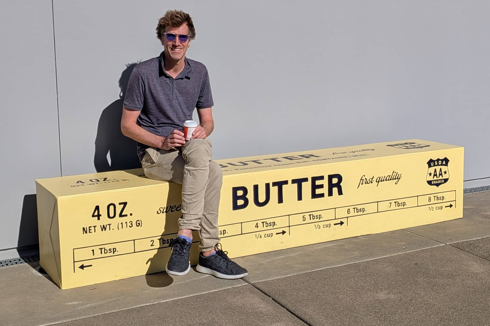

Things I'm proud of in 2025
This started off as a general "2025 in-review" but ended up too boring and too long, so here are just a handful of things I'm proud of last year. These aren't necessarily the most important work I did, or the most "impactful", but things that gave me joy, and hopefully will pay dividends in the future.
flex-wrap: balance
I spent a month or so implementing flex-wrap: balance. A lot of this time was
just spending time trying to understand different academic papers which
implement different solutions to the
Knuth-Plass line-breaking problem.
In the end, some of the solutions were too difficult to understand (research papers often gloss over important details, have poorly named variables, and also have bugs), so I ended up implementing something different/new instead. I primarily did this so that it will be maintainable, at some point someone might find an issue with the algorithm I used and will need to fix it.
I settled on something that was O(N) in the common case, and I think converges
to O(Nlog(N)) in the worst case (the naive solution is O(N^2) which is truly
the worst complexity).
Many people have wanted this feature since ~forever - hopefully we can give this to developers soon.
I use flex-wrap: balance in my other blog
post this year to build an image
gallery with flex.
Flexbox Precision Issues
Rounding errors typically don't matter that much for most applications. They do in layout engines, however, as it often results in a "gap" between the content of an element, and the element's border. This (rightfully) infuriates people.
Web layout engines use fixed-point arithmetic, (instead of floating-point) so when you divide a layout number by an integer you end up with a remainder.
Fixed-point is used as floating-point gets more inaccurate the further away from zero you get leading to gaps and other layout issues (someday I'll write a "floating-point is the worst" blog post).
Previously we discarded this remainder, and as such resulted in gaps when you
used justify-content: space-between on a flexbox as one example.
I implemented a "diffuser" which can diffuse/distribute the remainder over N buckets in a "nice" way. Under the hood this uses the core component of Bresenham's line drawing algorithm which is a fun 2D graphics cross-over.
The other precision issue I worked on was rounding issues within the floating-point calculation of how flex-grow/flex-shrink are used. The solution I ended up with is actually used within Gecko's flex implementation; in hindsight, I should have read that first.
It works by calculating the fraction of the remaining available space (instead of the total available space), which converges without underflow or overflow.
Fixing both these precision issues resulted in a non-trival number of bugs fixed.
The SVG Viewport Dependence Optimization
This was my first substantial optimization change for the year, as well as a nice win code complexity wise. In the end it was only worth about 0.1% on Speedometer3 but removed a bunch of complex logic maintaining HashMap on a hot codepath.
This optimization
essentially removed a HashMap containing elements which had geometry which
depended on the SVG viewport (<rect width="50%">) as one example. It replaced
it with a couple of bits computed during layout instead.
Many performance/code-complexity improvements I've made within Blink have been just removing HashMaps. It’s an interesting phenomenon, lots of developers will reach for HashMaps as they are "fast" O(1) insertion/removal is hard to beat, but often the slowness is caused by a piece of code looping over every element within the map (making it just a fancy list at that point), or a HashMap placed on a hotpath where the insert and contain operations eat CPU cycles.
The logic for maintaining these HashMaps are often very complex and fragile, and in my experience leads to bugs in browser engines.
Maybe one day I'll write a "HashMaps are the worst" blog post detailing this further.
Fixing <video> with aspect-ratio: 4/3 auto
There has been a relatively bad
bug in Blink with the
<video> element and the aspect-ratio property, namely we ignored the
aspect-ratio coming from a video once it had loaded.
The issue with fixing this bug was that every engine did something different,
and since time immemorial the <video> element has had a default
aspect-ratio of 2:1.
There were many web-platform-tests asserting this behaviour, as everyone actually did the same thing for the basic case.
The final fix was very straight-forward, but first required getting everyone to agree that everyone was wrong, and us proving that the proposed change was web-compatible (fortunately Hyrum's Law didn't apply today).
Other engines implementing "block-in-inline"
A few years ago we removed a significant code-complexity burden from Blink which is known as "inline-splitting". We inherited this from WebKit and caused major issues for us (and a security issue or two). The CSS2 spec also (unhelpfully) suggests that engines should implement this problem this way.
Why it's bad is a whole "Ian rants at you for an hour" type scenario - so let's not get into that today.
We've since ripped this code out, and now both WebKit and Servo appear to be implementing this approach as well last year (hurray!) and this should fix some well known bugs.
I don’t think I can claim the original idea, (it potentially was a suggestion from an EdgeHTML engineer), but I believe it is evidence that working in the open, and writing down how/why you did something can help out others in the same space later on.
Merging Anonymous Table Parts
My final piece of work in 2025 was trying to fix a cluster of issues caused by not merging anonymous table-parts correctly.
When you have an element with display: table-cell it implicitly creates a
table, table-section, table-row surrounding it. If you have two display: table-cells next to each other they belong to the same anonymous table, etc.
We had a long standing issue that when you removed or changed the display of
an element, we didn't "merge" these contiguous anonymous table objects correctly.
There have been attempts to fix this within Blink before, but ended up causing crashes and other issues. I spent a bunch of pre-work fixing things that might have caused crashes previously, and landed a patch to merge these objects. This should be out in the wild in February (so fingers crossed), and should fix a non-trivial amount of bugs for web-developers.
There are lots of other things I did work-wise that didn't make the cut
(helping ship width:stretch, CSS anchor positioning fixes, various performance
optimizations, removing -webkit-box quirks).
Let's see where 2026 takes us!